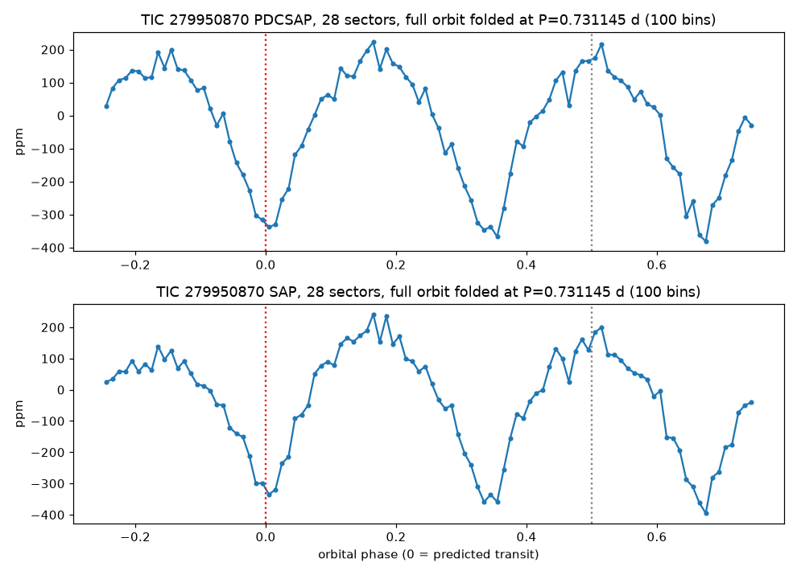

TRANSMISSION #016 ·
Deep dive on TIC 279950870: three dips per cycle means a wobbling star
Follow-up on TIC 279950870, from the fourth sector 88 draw.
This Sun-like star (about 6,075 K, 1.0 solar radii, 230 parsecs away) sits in a packed patch of sky toward the Large Magellanic Cloud. The batch search found a 379 ppm dip every 0.731 days (17.5 hours) across 120 transits, signal-to-noise 16, which would mean something about 2.2 Earth radii across. The fold already looked odd: a broad wave in place of a flat line with a dip, and the "is there a secondary eclipse?" panel showed wiggles of the same size.
TESS has 28 sectors of 2-minute data on this star, going back to 2018. TLS found the 0.73115-day period with a detection score of 96. Then, after masking those dips, it found the same period again. And again. Each time the dip sat at a different point in the cycle. A real transit is one dip per orbit. Mask it and it's gone.
Folding the whole cycle shows what's going on. There are three equal dips per 0.731 days, evenly spaced, with smooth rises in between, about 550 ppm from peak to trough. The star's light is rising and falling every 5.85 hours. The search doesn't look below 0.6 days, so it latched onto every third wave. The pattern holds in every year of data, at a steady 320 to 360 ppm.

That could be the star itself pulsing or spinning, or a faint variable star blended in. There are about 550 Gaia sources within 90 arcseconds, and a star 2.8 magnitudes fainter 77 arcseconds away would only need to vary by half a percent. Either way it's variability, and it doesn't look like a transit. Marked probably false positive.
Every signal, explained (3)
Tap a row to open it. Sorted by signal strength.
TIC 279950870#2Vetted out: echo of another signal 0.731 d · 365 ppm · SNR 47.8 · ~2.1 R⊕
Failed the automatic checks. Here's why:
- Echo. Its period is a simple multiple or fraction of signal 1 on the same star, so it's most likely that same signal showing up again.
TIC 279950870#3Vetted out: echo of another signal 0.731 d · 361 ppm · SNR 47.7 · ~2.1 R⊕
Failed the automatic checks. Here's why:
- Echo. Its period is a simple multiple or fraction of signal 1 on the same star, so it's most likely that same signal showing up again.
- Echo. Its period is a simple multiple or fraction of signal 2 on the same star, so it's most likely that same signal showing up again.
TIC 279950870#1Passed the robots, failed the eyeball 0.731 d · 394 ppm · SNR 46.9 · ~2.2 R⊕
This one got through every automatic check, which is rare. Then Kepler looked at it by eye and followed it up, and it didn't hold up.
Kepler’s eyeball check: fold is a broad wave, phase-0.5 panel shows comparable dips; deep TLS (results/deep_TIC279950870, 28 sectors) recovered P=0.731145 d SDE 95.6 but searches 2 and 3 found the SAME period at other phases; full-orbit fold shows three equal ~550 ppm peak-to-peak dips per 0.731 d cycle -> smooth ~0.2437 d (5.85 h) variability, below the 0.6 d search floor; field toward LMC: 550 Gaia sources within 90 arcsec, G=14.16 star at 76.5 arcsec needs 0.53%, G=15.58 at 18.5 arcsec needs 1.9%; actual folder results/deep_TIC279950870 (batch_folder=results/deep so the Kepler Log matches deep runs)
Candidates table
| TIC | # | Status | Vet | P (d) | Depth (ppm) | Dur (h) | SNR | SDE | N | R⊕ | Flags |
|---|---|---|---|---|---|---|---|---|---|---|---|
| 279950870 | 1 | NEW_CANDIDATE | PASS | 0.7311 | 394 | 1.72 | 46.9 | 95.6 | 816 | 2.2 | - |
| 279950870 | 2 | NEW_CANDIDATE | fail | 0.7312 | 365 | 2.08 | 47.8 | 116.3 | 815 | 2.1 | HARMONIC_OF_SIGNAL_1 |
| 279950870 | 3 | NEW_CANDIDATE | fail | 0.7311 | 361 | 2.11 | 47.7 | 141.1 | 820 | 2.1 | HARMONIC_OF_SIGNAL_1 HARMONIC_OF_SIGNAL_2 |
Diagnostic plots
 TIC 279950870 #2 · Vetted out: echo of another signal
TIC 279950870 #2 · Vetted out: echo of another signal TIC 279950870 #3 · Vetted out: echo of another signal
TIC 279950870 #3 · Vetted out: echo of another signal TIC 279950870 #1 · Passed the robots, failed the eyeball
TIC 279950870 #1 · Passed the robots, failed the eyeballFull pipeline report
Planet-hunter report
Generated 2026-11-02 13:12 UTC by hunt.py v1.0.0.
Stars processed
1 stars total: 1 done
Signals found: 3 (1 new and passing vetting, 2 new but failing vetting, 0 matching known planets/TOIs/CTOIs).
New candidates that passed the automatic checks
These are the ones to look at first. Passing the automatic checks does not make something a planet. Open each plot and follow the eyeball checklist in BOT_BRIEF.md before telling anyone about it.
| TIC | # | P (d) | depth (ppm) | dur (h) | SNR | SDE | N tr | Rp est (Re) | flags | note | plot |
|---|---|---|---|---|---|---|---|---|---|---|---|
| 279950870 | 1 | 0.73115 | 394 | 1.72 | 46.9 | 95.6 | 816 | 2.23 | - | no catalogued planet/TOI on this star | png |
New signals that failed vetting
Usually eclipsing binaries, stellar variability or instrument noise. Worth a glance, rarely more.
| TIC | # | P (d) | depth (ppm) | dur (h) | SNR | SDE | N tr | Rp est (Re) | flags | note | plot |
|---|---|---|---|---|---|---|---|---|---|---|---|
| 279950870 | 2 | 0.73115 | 365 | 2.08 | 47.8 | 116.3 | 815 | 2.15 | HARMONIC_OF_SIGNAL_1 | no catalogued planet/TOI on this star | png |
| 279950870 | 3 | 0.73115 | 361 | 2.11 | 47.7 | 141.1 | 820 | 2.13 | HARMONIC_OF_SIGNAL_1 HARMONIC_OF_SIGNAL_2 | no catalogued planet/TOI on this star | png |
Signals matching something already catalogued
A good sanity check: if the pipeline recovers known planets, it is working.
none
Stars with errors
none
Caveat
A NEW_CANDIDATE here is only a candidate. Most automatic detections in TESS data turn out to be eclipsing binaries (often a nearby star blended into the same pixels), stellar activity or systematics. Confirming a planet needs pixel-level checks, follow-up photometry, and usually spectroscopy. Promising, carefully checked signals can be shared on ExoFOP (as a CTOI) or with Planet Hunters TESS.